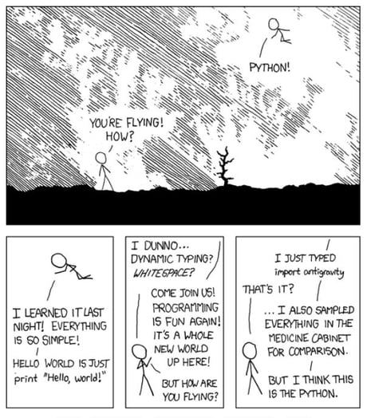

Section 03 Python: Basics (I)
“I was what they call ‘skinny fat’ - a body that resembled a python after swallowing a goat.” - A. J. Jacobs
What is Python?
Python, one of the most popular programming languages in
the world, has created everything from Netflix’s recommendation
algorithm to the software that controls self-driving cars.
Python is a general-purpose language, which means it’s
designed to be used in a range of applications, including data
science, software and web development,
automation, and generally getting stuff
done.
Python is a computer programming language often used to
build websites and software, automate tasks, and conduct data analysis.
Python is a general-purpose language,
meaning it can be used to create a variety of different programs and
isn’t specialized for any specific problems. This versatility, along
with its beginner-friendliness, has made it one of the most-used
programming languages today. A survey found that it was the most popular
programming language among developers in 2020.

Why Python?
Python is popular for a number of reasons. Here’s a
deeper look at what makes it so versatile and easy to use for
coders.
It has a simple syntax that mimics natural language, so it’s easier to read and understand. This makes it quicker to build projects, and faster to improve on them.
It’s versatile.
Pythoncan be used for many different tasks, from web development to machine learning.It’s beginner-friendly, making it popular for entry-level coders.
It’s open source, which means it’s free to use and distribute, even for commercial purposes.
Python’s archive of modules and libraries, bundles of code that third-party users have created to expandPython’s capabilities, is vast and growing.Pythonhas a large and active community that contributes toPython’s pool of modules and libraries, and acts as a helpful resource for other programmers. The vast support community means that if coders run into a stumbling block, finding a solution is relatively easy; somebody is bound to have run into the same problem before.

First look at Spyder
Follow instructions
to install Spyder.
The Spyder IDE (Integrated Development Environment) is a
simple and beginner-friendly integrated development environment for
Python. It allows you to write, run, and debug your
Python code.

Introduction to Python
The flow
By default, Python runs the script line by
line. For example, if you run the following lines, a triangle would show
up in your Console.
Always think about clarifying your intentions, as others may later
read your code. Here we call such intentions as “comments”. Anything
that follows after the hash symbol # is ignored by
Python when it executes code.
We can write a few lines with meaningful information:
# Print a few lines with meaningful information
print("Once there is a guy Lei, ")
print("he is 18 years old.")
print("He likes the name Lei,")
print("but does not like being 18.")The output in your Console will be in the same order.
Variables
Suppose you want to change the name Lei and age
36 in the previous chunk of code, something like:
# Print a few lines with meaningful information
print("Once there is a guy Peng, ")
print("he is 22 years old.")
print("He likes the name Peng,")
print("but does not like being 22.")It would be very handy if we could create variables to contain those pieces of information, and later use those variables directly.
# Create variables
name = "Lei"
age = "18"
# Use variables
print("Once there is a guy " + name + ", ")
print("he is " + age + " years old.")
print("He likes the name " + name + ", ")
print("but does not like being " + age + ".")Here you see we use = to assign the variables. A
string is defined with the "", and we use
+ to combine two strings.
Now change the name and age to feel the
power of variables:
# Create variables
name = "Superman"
age = "180"
# Use variables
print("Once there is a guy " + name + ", ")
print("he is " + age + " years old.")
print("He likes the name " + name + ", ")
print("but does not like being " + age + ".")Or use \n inside a string as ENTER to start
a new line:
# Create a variable
school = "School of Environment"
# Use +
print(school + " is Cool!")
# Use \n
print("School of Environment \nis cool!")Python variables are
case-sensitive.
Working with strings
Python provides many built-in functions to
handle strings, here are some commonly-used ones:
# Create a variable
school = "School of Environment"
# Change all characters into lower case
print(school.lower())
# Change all characters into upper case
print(school.upper())
# Are all characters in upper case?
print(school.isupper())
# Get the length of the string
print(len(school))Here we use . to call a function, and then apply the
function to school. You may also use several functions one
after another:
If you want to get a specific character, use index.
Remember, index in Python starts from
0.
# Print the 1st character
print(school[0])
# Print the 2nd character
print(school[1])
# Print a substring
print(school[5:10])Use index() to return the index of a string, or
replace() to replace a string with something else.
# Use index()
# School of Environment
# 012345678901234567890
print(school.index("E"))
# Return the 1st match case
print(school.index("o"))
# Return the index of the substring
print(school.index("Env"))
# Try this, can you find z?
print(school.index("z"))
# Use replace()
print(school)
print(school.replace("Environment","Chemistry"))
print(school)Working with numbers
When using Python as a calculator, the order of
operations is the same as you would have learned back in school. From
highest to lowest precedence:
- Parentheses:
(,) - Exponents:
** - Multiply:
* - Divide:
/ - Add:
+ - Subtract:
-
Really small or large numbers get a scientific notation:
You can write numbers in scientific notation too:
To convert number to string, use str()
Mathematical functions
Python has many built-in mathematical functions. To call
a function, we can type its name, followed by open and closing
parentheses (). Anything we type inside the parentheses is
called the function’s arguments:
# Get the mod
print(10 % 3)
# Get the absolute value
abs(-5)
# Get the power
pow(10, 2)
# Max and min
max(4, 6)
min(4, 6)
# Round
round(3.2)
round(3.7)
# Round with 1 digit
round(3.71,1)You can find more mathematical functions in the math
library. To import those functions, we type:
from math import * means we import all functions from
the math library.
Find more functions and how to use them at Mathematical functions.
User inputs
Use input() to ask for inputs from the user:
Comparing things
We can also do comparisons:
# Equality (note two equals signs, read as "is equal to")
1 == 1
# Inequality (read as "is not equal to")
3 != 2
# Less than
100 < 101
# Less than or equal to
1e3 <= 2e3
# Greater than
1/3 > 1/5
# Greater than or equal to
-100 > -200
# Use not() function
not(1 == 1)Such True or False is called
bool type. So far, we have covered int,
float, string, and bool. You can
always use type() function to determine the type of a
variable.
List
Python has a great built-in list type named list.
List literals are written within square brackets
[ ]. Lists work similarly to strings - use the
len() function and square brackets [ ] to
access data, with the first element at index 0.
# Make a list
my_list = ["Xiaohua", "Xiaoming", "Xiaoli", 9, 10.1]
# Print the list
print(my_list)
# Show the 1st element
print(my_list[0])
# Show the last element
print(my_list[-1])
# Includes element at index 2 and 3,
# excludes element at index 4
print(my_list[2:4])
# Show the 2nd element and afterward
print(my_list[1:])Some common functions to handel lists:
# Make a list
firends = ["Xiaohua", "Xiaoming", "Xiaoli", "Xiaoyan", "Xiaoguang", "Xiaoping"]
# Make another list
ages = [20, 31, 18, 29, 45, 15]
# Extend the list by appending all the items from the iterable
firends.extend(ages)
print(firends)
# Add an item to the end of the list
firends.append("99")
print(firends)
# Return index in the list of the first item whose value is equal to x
print(firends.index("Xiaoli"))
print(firends.index("Xiaoniu"))
# Insert an item at a given position
firends.insert(0,"Xiaoyong")
print(firends)
# Remove the first item from the list whose value is equal to x
firends.remove("Xiaoli")
print(firends)
# Remove all items from the list
firends.clear()
print(firends)
#------------------------------
# Make a new list
firends = ["Xiaohua", "Xiaoming", "Xiaoli", "Xiaoyan", "Xiaoguang", "Xiaoping", "Xiaoming"]
# Return the number of times x appears in the list
firends.count("Xiaoming")
# Sort the items of the list
firends.sort()
print(firends)
ages.sort()
print(ages)
# Reverse the elements of the list
firends.reverse()
print(firends)
ages.reverse()
print(ages)
# Return a shallow copy of the list
firends2 = firends.copy()
print(firends2)For more functions, please refer to Python Data Structures - More on List.
Tuple
A tuple is a collection of objects which are ordered and
immutable. Tuples are sequences, just like lists. The
differences between tuples and lists are, the tuples cannot be
changed unlike lists; and tuples use parentheses
(), whereas lists use square brackets [].
# Define a tuple
coordinates = (25.6, 119.8)
# Print the tuple
print(coordinates)
# Print the 2nd element
print(coordinates[1])
# Can you change it?
coordinates[1] = 120.7
# A more complex tuple
coordinates = [(25.6, 119.8), (22.9, 118.8), (21.7, 116.2)]
# Print the tuple
print(coordinates)
# Print the 2nd element
print(coordinates[1])
# What does this print?
print(coordinates[1][1])For more functions, please refer to Python Data Structures - Tuples and Sequences.
Function
A function is a block of organized, reusable code that is used to perform a single, related action. Functions provide better modularity for your application and a high degree of code reusing.
As you already know, Python gives you many built-in
functions like print(), etc., but you can also create your
own functions. These functions are called user-defined functions.
Let’s define a simple function to say hi:
Function blocks begin with the keyword def, followed by
the function name and parentheses ( ). The code block
within every function starts with a colon : and is
indented - things not indented are not part of the
function.
Call the function by:
We can pass a variable, aka parameter, in the function
like:
# Define a function with one parameter
def say_hi(name):
print("Hi " + name + "!")
say_hi("ESE5023ers")You can pass more than one parameter:
Return values from a function
The statement return exits a function, optionally
passing back an expression to the caller. A return statement with no
arguments is the same as return None.
# Define a function to return the square of a number
def get_square(num):
return num*num
get_square(10)Or you can assign the return value into a variable:
Conditional statements
Often when we’re coding, we want to control the flow of our actions. This can be done by setting actions to occur only if a condition or a set of conditions are met.
There are several ways you can control flow in Python.
For conditional statements, the most commonly used approaches are the
if and else constructs.
Given today’s AQI (Air Quality Index) value, suppose we want to write
a piece of code to check whether the Air Quality is excellent (AQI <=
50) or not.
AQI = 59
# If this condition is TRUE
if (AQI <= 50):
# Do the following
print("Air Quality is Excellent")The print statement does not appear in the Console
because AQI is larger than 50. To print a
different message for numbers larger than 50, we can add an
else statement.
# If this condition is TRUE
if (AQI <= 50):
# Do the following
print("Air Quality is Excellent")
# If this condition is FALSE
else:
print("Air Quality is NOT Excellent")You can also test multiple conditions by using elif
(means else if).
# Now use else if
if (AQI <= 50):
# Do the following line
print("Air Quality is Excellent")
elif (AQI <= 100):
# Do the following line
print("Air Quality is GOOD")
else:
# Do the following line
print("Air Pollution!")Change AQI to 40, 80, and
120, check the output.
Important: when Python evaluates the
condition inside if statements, it is looking for a logical
element (bool), i.e., TRUE or
FALSE.
AQI1 = 69
AQI2 = 140
if (AQI1 <= 100 or AQI2 <= 100):
print("There is at least 1 site with a GOOD air quality")
if (AQI1 <= 100 and AQI2 <= 100):
print("Both sites have GOOD air quality")Change AQI2 to 40, 80, and
120, check the output.
Seeking Help
Reading Help files
Python, and every library, provide help files for
functions. The general syntax to search for help on any function,
“function_name”, from a specific function that is in a library imported
into your namespace (your interactive Python session):
help(function_name)
This will load up a help page.
When your code doesn’t work: seeking help from your peers
If you’re having trouble using a function, 9 times out of 10, the
answers you are seeking have already been answered on
Stack Overflow. You can search
using the [python-3.x] tag. Finally, you will always find
Google is your good friend.
In-class exercises
Exercise #1
- Create a folder named
ESE5023- Windows: In
C:\orD:\disk - macOS: In
/home/
- Windows: In
- Change
SpyderWorking directoryto the above folder.
Exercise #2
What will be the value of each variable after each statement in the program?
- Now type the above lines in Console, check your
results.
- Write a command to compare
X3toX4. Which one is larger? - Clean up your variables by deleting the
X1,X2, andX3.
Exercise #3
Build a basic calculator:
First, it asks a user to input two numbers.
Then it prints the addition of the two variables.
[Hint: you may find float() function useful to convert a
string into a number]
Exercise #4
Create a function
f2cthat returns temperatures in degrees Celsius (C) with Fahrenheit temperature (F) as input parameter, based on the following equation: \[C = (F - 32) * 5/9\]Check output with F=32 and F=100.
Can you create its inverse function
c2fto convert temperatures in degrees Celsius (C) to Fahrenheit (F) ?